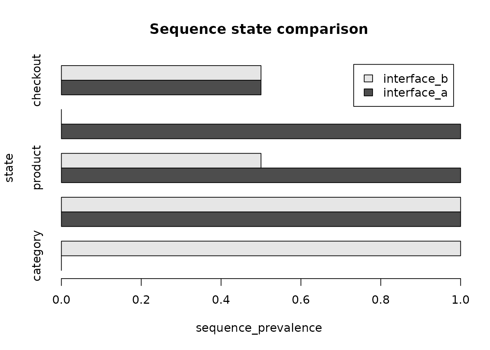

Consensus Sequences and Descriptive Group Comparisons
Source:vignettes/consensus-and-group-comparisons.Rmd
consensus-and-group-comparisons.RmdScope
This workflow describes aligned states and differences in observed sequence structure. A consensus is not a behavioural norm, and a between-group difference is not evidence of a psychological or causal mechanism.
Synthetic sequences
paths <- list(
s1 = c("home", "search", "product", "checkout"),
s2 = c("home", "search", "product", "home"),
s3 = c("home", "category", "product", "checkout"),
s4 = c("home", "category", "home", "home")
)
sequence_data <- do.call(rbind, lapply(seq_along(paths), function(i) {
data.frame(
sequence_id = names(paths)[i],
sequence_order = seq_along(paths[[i]]),
state = paths[[i]],
group = rep(c("interface_a", "interface_b"), each = 2L)[i],
stringsAsFactors = FALSE
)
}))
sequence_data
#> sequence_id sequence_order state group
#> 1 s1 1 home interface_a
#> 2 s1 2 search interface_a
#> 3 s1 3 product interface_a
#> 4 s1 4 checkout interface_a
#> 5 s2 1 home interface_a
#> 6 s2 2 search interface_a
#> 7 s2 3 product interface_a
#> 8 s2 4 home interface_a
#> 9 s3 1 home interface_b
#> 10 s3 2 category interface_b
#> 11 s3 3 product interface_b
#> 12 s3 4 checkout interface_b
#> 13 s4 1 home interface_b
#> 14 s4 2 category interface_b
#> 15 s4 3 home interface_b
#> 16 s4 4 home interface_bAligned-position consensus
consensus <- create_consensus_sequence(
sequence_data,
group_cols = "group",
tie_method = "first",
state_levels = c("home", "search", "category", "product", "checkout")
)
consensus
#> group sequence_order consensus_state support_n support_weight agreement
#> 1 interface_a 1 home 2 2 1.0
#> 2 interface_a 2 search 2 2 1.0
#> 3 interface_a 3 product 2 2 1.0
#> 4 interface_a 4 home 2 2 0.5
#> 5 interface_b 1 home 2 2 1.0
#> 6 interface_b 2 category 2 2 1.0
#> 7 interface_b 3 home 2 2 0.5
#> 8 interface_b 4 home 2 2 0.5
#> tie_n tied_states n_sequences
#> 1 1 home 2
#> 2 1 search 2
#> 3 1 product 2
#> 4 2 home | checkout 2
#> 5 1 home 2
#> 6 1 category 2
#> 7 2 home | product 2
#> 8 2 home | checkout 2
summarise_consensus_agreement(consensus, by = "group")
#> group n_positions mean_agreement median_agreement min_agreement
#> 1 interface_a 4 0.875 1.00 0.5
#> 2 interface_b 4 0.750 0.75 0.5
#> max_agreement weighted_agreement n_ties n_below_threshold threshold
#> 1 1 0.875 1 0 0.5
#> 2 1 0.750 2 0 0.5
format_consensus_sequence(consensus, include_agreement = TRUE)
#> group path
#> 1 interface_a home [1.000] -> search [1.000] -> product [1.000] -> home [0.500]
#> 2 interface_b home [1.000] -> category [1.000] -> home [0.500] -> home [0.500]
#> n_positions
#> 1 4
#> 2 4
plot_consensus_sequence(consensus, type = "agreement", group = "interface_a")Descriptive group comparison
comparison <- compare_sequence_groups(
sequence_data,
group_col = "group"
)
comparison$groups
#> group n_sequences
#> 1 interface_a 2
#> 2 interface_b 2
head(comparison$state_contrasts)
#> group_1 group_2 state event_share_group_1 event_share_group_2
#> 1 interface_a interface_b category 0.000 0.250
#> 2 interface_a interface_b checkout 0.125 0.125
#> 3 interface_a interface_b home 0.375 0.500
#> 4 interface_a interface_b product 0.250 0.125
#> 5 interface_a interface_b search 0.250 0.000
#> event_share_difference event_share_ratio sequence_prevalence_group_1
#> 1 -0.250 0.00 0.0
#> 2 0.000 1.00 0.5
#> 3 -0.125 0.75 1.0
#> 4 0.125 2.00 1.0
#> 5 0.250 NA 1.0
#> sequence_prevalence_group_2 sequence_prevalence_difference
#> 1 1.0 -1.0
#> 2 0.5 0.0
#> 3 1.0 0.0
#> 4 0.5 0.5
#> 5 0.0 1.0
#> sequence_prevalence_ratio
#> 1 0
#> 2 1
#> 3 1
#> 4 2
#> 5 NA
head(comparison$transition_contrasts)
#> group_1 group_2 transition occurrence_share_group_1
#> 1 interface_a interface_b home -> search 0.3333333
#> 2 interface_a interface_b product -> checkout 0.1666667
#> 3 interface_a interface_b product -> home 0.1666667
#> 4 interface_a interface_b search -> product 0.3333333
#> 5 interface_a interface_b category -> home 0.0000000
#> 6 interface_a interface_b category -> product 0.0000000
#> occurrence_share_group_2 occurrence_share_difference occurrence_share_ratio
#> 1 0.0000000 0.3333333 NA
#> 2 0.1666667 0.0000000 1
#> 3 0.0000000 0.1666667 NA
#> 4 0.0000000 0.3333333 NA
#> 5 0.1666667 -0.1666667 0
#> 6 0.1666667 -0.1666667 0
#> sequence_prevalence_group_1 sequence_prevalence_group_2
#> 1 1.0 0.0
#> 2 0.5 0.5
#> 3 0.5 0.0
#> 4 1.0 0.0
#> 5 0.0 0.5
#> 6 0.0 0.5
#> sequence_prevalence_difference sequence_prevalence_ratio
#> 1 1.0 NA
#> 2 0.0 1
#> 3 0.5 NA
#> 4 1.0 NA
#> 5 -0.5 0
#> 6 -0.5 0
comparison$length_contrasts
#> group_1 group_2 mean_length_group_1 mean_length_group_2
#> 1 interface_a interface_b 4 4
#> mean_length_difference median_length_group_1 median_length_group_2
#> 1 0 4 4
#> median_length_difference
#> 1 0
plot_sequence_group_comparison(comparison, component = "state", top_n = 5L)
The output reports counts, shares, prevalence, differences, and ratios. It does not compute a significance test or automatically rank one group as preferable.